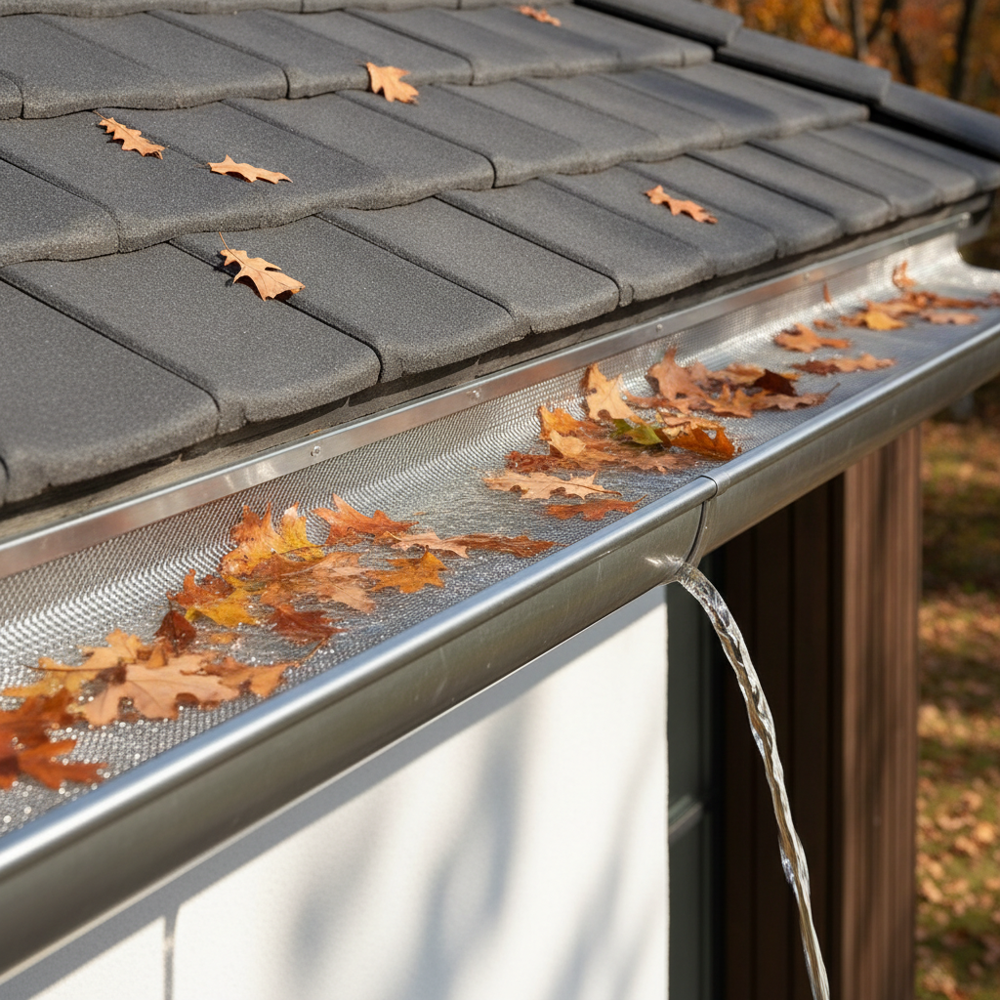
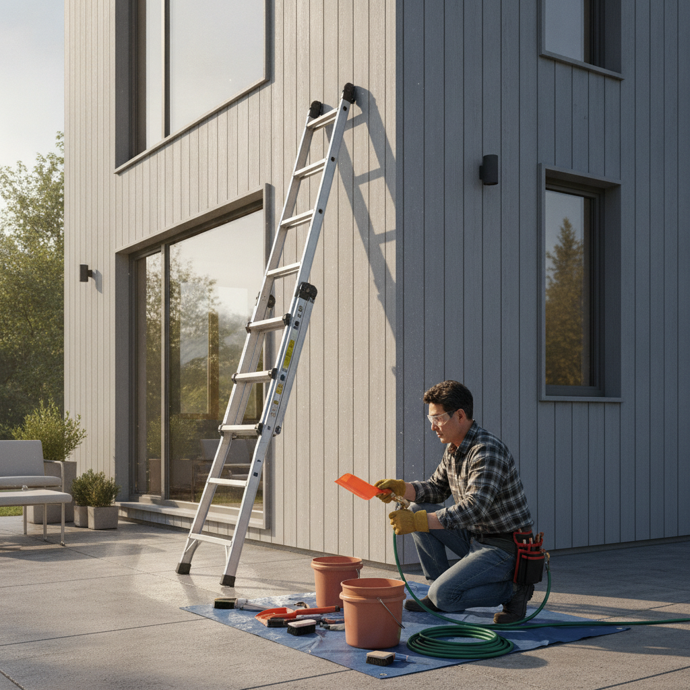

전원주택 처마 물받이 낙엽 청소와 거름망 설치 방법 — 막힘 누수 예방과 셀프 시공 체크리스트
가을철 전원주택 주변의 울창한 나무에서 떨어지는 낙엽은 지붕 처마 물받이(거터)를 막는 주원인입니다. 물받이와 선홈통이 낙엽과 흙먼지로 막히면 빗물이 역류하여 처마 속 목재를 부식시키고 외벽 크랙을 통해 실내 누수를 유발하며, 겨울철에는 고인 물이 얼어붙어 물받이가 휘거나 찢어지는 심각한 동파 사고로 이어집니다. 본 글에서는 안전하고 확실한 처마 물받이 셀프 청소 5단계 요령과 선홈통 배관 뚫기 노하우, 낙엽 유입을 영구적으로 방지하는 거름망(거터가드) 종류별 비용 비교 및 시공 체크리스트를 공개합니다.

전원주택 처마 물받이에 낙엽 유입 방지 거름망을 설치하여 배수를 원활히 한 모습 / AI 제작 이미지
01 | 가을철 전원주택의 불청객, 처마 물받이 낙엽 막힘의 위험성
아파트와 달리 전원주택이나 단독주택은 자연과 맞닿아 있어 계절 변화에 따른 주기적인 외곽 관리가 필수적입니다. 특히 9월 말부터 11월 사이 단풍이 절정에 달하고 낙엽이 지기 시작하면 지붕 경사면을 타고 굴러떨어진 마른 잎들이 처마 물받이 안으로 차곡차곡 쌓이게 됩니다.
처음에는 바삭한 마른 잎이지만 가을비와 아침이슬을 맞으면 물을 머금고 썩어 무거운 진흙 형태의 슬러지로 변합니다.
이 슬러지가 지상으로 빗물을 내려보내는 수직 배수관(선홈통) 입구를 막아버리면, 지붕 면적 전체에 쏟아지는 수백 리터의 빗물이 갈 곳을 잃고 처마 밖으로 폭포수처럼 넘쳐흐르게 됩니다.
02 | 물받이(거터)와 선홈통(드레인)의 구조적 배수 원리
지붕 우수 배수 시스템은 크게 지붕 끝을 따라 수평으로 설치된 '처마 물받이(Gutter)'와 물받이에 모인 물을 수직으로 모아 지표면이나 우수관으로 유도하는 '선홈통(Downspout)'으로 나뉩니다.
원활한 배수를 위해 물받이는 선홈통 연결구를 향해 1m당 약 3~5mm(1/200~1/300) 수준의 완만한 경사(구배)를 두고 시공됩니다.
만약 물받이 특정 구간에 흙과 나뭇잎이 퇴적되어 둑을 형성하면 물길이 끊기게 되고, 고인 물의 무게 때문에 물받이 고정 브라켓이 아래로 처지면서 배수 기울기가 완전히 역전되어 물이 영구적으로 고이는 고질적인 하자가 발생합니다.
03 | 낙엽과 이물질이 방치되었을 때 생기는 외벽 누수와 지붕 훼손
물받이 막힘을 방치했을 때 주택에 가해지는 손상은 상상 이상으로 치명적입니다.
첫째, 외벽 오염 및 실내 누수: 넘친 빗물이 외벽 마감재(스타코, 벽돌, 사이딩)를 타고 흘러내려 흉측한 검은 물때를 남기며, 미세한 크랙 틈새로 스며들어 단열재를 적시고 실내 벽지에 곰팡이를 번식시킵니다.
둘째, 처마 서까래 부식: 처마 플래싱(물 끊기 후레싱) 뒤쪽으로 빗물이 역류하여 내부 목재 골조나 합판을 썩게 만듭니다.
셋째, 겨울철 결빙 파손: 물받이에 가득 찬 젖은 낙엽과 물이 영하의 겨울 날씨에 얼어붙으면 부피가 팽창하면서 알루미늄이나 동(구리) 물받이가 터지거나, 고드름의 하중을 이기지 못하고 물받이 전체가 뜯겨 나가는 2차 대형 사고로 이어집니다.

처마 물받이 청소를 위해 안전 사다리와 전용 청소 도구를 준비한 모습 / AI 제작 이미지
04 | 안전이 최우선! 사다리 작업 기본 수칙과 필수 장비 준비
처마 청소는 최소 2.5m에서 6m 이상의 높은 곳에서 이루어지는 고소 작업이므로 안전장비 착용과 작업 수칙 준수가 그 무엇보다 중요합니다.
· A형 2중 안전 사다리: 흔들림 없는 알루미늄 2중 사다리를 평평하고 단단한 지면에 설치하며, 사다리 상단 2계단에는 절대 발을 올려서는 안 됩니다. 경사각은 75도(4:1 법칙: 높이 4m당 밑단 거리 1m)를 유지해야 전복을 방지할 수 있습니다.
· 2인 1조 작업 원칙: 1명이 사다리를 타고 올라갈 때 반드시 다른 1명이 아래에서 사다리 다리를 온몸으로 지지하고 주변을 감시해야 합니다.
· 필수 장비 리스트: 질긴 코팅 방수 장갑, 보안경(부스러기 눈 유입 방지), 물받이 전용 곡면 스쿱(모종삽보다 플라스틱 스쿱이 코팅 손상을 막음), 폐기물 수거용 버킷과 S자 고리, 고압 분사 노즐이 달린 호스를 구비합니다.
05 | 5단계로 끝내는 처마 물받이 셀프 청소 실전 순서
청소 효율을 극대화하고 바닥 오염을 줄이기 위한 단계별 시공 순서입니다.
🧹 처마 물받이 완벽 청소 5단계
1. 선홈통 입구 임시 차단: 청소 도중 밀려 내려간 나뭇가지가 수직 배관을 막지 않도록, 선홈통 입구에 마른 걸레나 배수망을 임시로 꽂아둡니다.
2. 마른 표면 낙엽 수거: 손이나 플라스틱 스쿱을 이용해 겉에 마른 낙엽과 큰 나뭇가지를 긁어모아 사다리에 걸어둔 버킷에 담아냅니다.
3. 퇴적 슬러지 긁어내기: 물받이 바닥에 달라붙은 젖은 흙먼지와 부식 유기물을 선홈통의 반대 방향에서 선홈통 쪽으로 부드럽게 긁어모아 배출합니다.
4. 선홈통 개방 및 고압 물세척: 임시 마개를 제거하고 호스를 연결하여 물받이 가장 높은 쪽부터 선홈통 방향으로 고압 물을 분사해 잔여 흙먼지를 완전히 씻어냅니다.
5. 배수 흐름 및 누수 관찰: 물이 고이지 않고 선홈통으로 막힘없이 빠르게 빠져나가는지, 물받이 이음새에서 물이 새지 않는지 최종 육안 점검합니다.
06 | 선홈통 내부가 꽉 막혔을 때 배관 뚫는 요령과 도구
만약 물세척을 해도 선홈통 하부에서 물이 나오지 않고 물받이 위로 차오른다면 수직 배관 내부 꺾임부(엘보 구간)가 꽉 막힌 상태입니다.
이때 쇠막대기로 무리하게 쑤시면 얇은 홈통 배관이 찌그러지거나 찢어질 수 있으므로 다음 방법들을 순차 적용해야 합니다.
1단계는 배관 청소용 와이어(스네이크 스프링 관통기)를 선홈통 상단 구멍으로 밀어 넣어 시계 방향으로 돌리며 뭉친 낙엽 덩어리를 파쇄하는 것입니다. 2단계는 수직 배관 아래쪽 연결관에 고압 호스를 반대로 아래에서 위로 쏘아 올려 역세척하는 방법입니다. 그래도 뚫리지 않는다면 선홈통 엘보 이음새의 피스를 전동 드라이버로 풀고 부품을 탈거하여 내부 이물질을 직접 제거한 뒤 재조립해야 합니다.
07 | 낙엽 유입을 원천 차단하는 거름망(거터가드) 종류 및 특징 비교
매년 위험을 무릅쓰고 사다리에 오르는 수고를 덜기 위해서는 청소 후 물받이 위에 '낙엽 방지 거름망(거터가드)'을 설치하는 것이 최선의 영구 해결책입니다. 시중에서 유통되는 대표적인 3가지 재질의 거름망을 비교 분석하였습니다.
| 거름망 종류 |
재질 및 형태 |
주요 장점 |
단점 및 한계 |
미터당 자재비 |
| 알루미늄/스텐 마이크로 메시 (권장) |
금속 타공판 + 미세 스테인리스 망 |
소나무 솔잎까지 완벽 차단, 15년 이상 반영구 수명, 변형 없음 |
초기 자재 비용이 다소 높음, 피스 고정 필요 |
8,000원 ~ 15,000원 |
| 플라스틱(PVC) 롤망 |
검은색 폴리에틸렌 그물망 + 클립형 |
가위로 쉽게 재단 가능, 시공 난이도 최하, 저렴한 가격 |
자외선에 3~4년 후 경화 파손, 솔잎 통과 위험 |
2,000원 ~ 4,000원 |
| 스펀지 폼 필터 |
다공성 특수 폴리우레탄 폼 인서트 |
물받이에 쏙 끼워 넣는 방식으로 공구 불필요, 외부 노출 없음 |
먼지가 폼 사이에 엉겨 붙어 5년 후 배수력 저하, 이끼 번식 |
10,000원 ~ 18,000원 |
활엽수(참나무, 단풍나무)가 많은 지역이라면 경제적인 플라스틱 롤망으로도 충분하지만, 주변에 잣나무나 소나무가 있어 미세한 솔잎이 많이 떨어지는 전원주택이라면 구멍 크기가 1mm 이하인 '알루미늄 마이크로 메시 거터가드'를 설치해야 후회가 없습니다.
08 | 셀프 거름망 설치 vs 전문 업체 시공 비용 및 수명 비교
전체 지붕 둘레가 약 40m인 30평형 2층 단독주택을 기준으로 셀프 시공과 전문 업체 의뢰 비용을 비교해 드립니다.
· 셀프 자재 구매 시공: 고급 알루미늄 마이크로 메시 가드 40m 구매 시 자재비 약 35만~45만 원, 전용 고정 클립 및 스테인리스 피스 약 3만 원으로 총 40만~50만 원 선에서 공사가 완료됩니다.
· 전문 스카이차 및 설비 업체 의뢰: 2층 주택의 경우 안전을 위한 고소작업차(스카이차 1일 대여료 50만~60만 원)와 전문 기술자 2인 인건비(60만~80만 원), 자재비가 합산되어 총 150만~220만 원 선의 견적이 산출됩니다.
1층 단층 주택이거나 지붕 경사가 완만하다면 셀프 시공으로 100만 원 이상의 경비를 절감할 수 있으나, 2층 이상 고소 구간이거나 경사가 급한 박공지붕이라면 낙상 사고 방지를 위해 반드시 전문 설비 업체에 의뢰하시길 권장합니다.
09 | 가을 장마와 겨울 폭설 전 물받이 구배(기울기) 점검 요령
거름망을 덮기 전 반드시 물받이 자체의 기울기와 고정 상태를 최종 튜닝해야 합니다.
수평계나 스마트폰 경사계 앱을 이용하거나, 페트병에 물을 담아 물받이 맨 끝에 부어보았을 때 물방울이 지체 없이 선홈통을 향해 일정한 속도로 흘러내려 가야 정상입니다.
만약 중간에 물이 찰랑거리며 고여 있다면, 해당 구간을 지지하고 있는 금속 행거(브라켓)의 나사를 살짝 풀어 높낮이를 재조정한 뒤 펜치로 브라켓 각도를 들어 올려 역구배를 교정해 주어야 합니다. 또한 이음새 부위의 실리콘이 삭았다면 옥외용 변성 실리콘(우레탄 계열)을 두툼하게 덧발라 방수 밀봉을 강화하세요.
10 | 전원주택 외벽·처마 월동 준비 전 최종 확인 체크리스트
본격적인 한파와 첫눈이 내리기 전 완벽한 주택 관리를 위한 5대 체크포인트입니다.
📋 전원주택 처마 물받이 월동 점검 체크리스트
1. 선홈통 하부 집수정 퇴적물 제거: 지상으로 내려온 선홈통 끝 집수정(맨홀) 뚜껑을 열고 낙엽과 모래를 완전히 퍼내었는지 확인하세요.
2. 거름망 클립 체결 강도 점검: 겨울철 강풍에 거름망이 날아가지 않도록 50cm 간격으로 고정 클립이나 피스가 단단히 조여졌는지 당겨보세요.
3. 지붕 위 돌출 나뭇가지 전정: 처마 위로 뻗어 낙엽을 집중 투하하는 인접 수목의 나뭇가지는 전정 가위로 미리 가지치기하세요.
4. 열선 설치 필요성 검토: 응달진 북향 처마 구간에 매년 대형 고드름이 맺힌다면 물받이 내부에 동파 방지 정온 전선(열선) 매립을 함께 고려하세요.
#전원주택물받이청소
#처마낙엽청소
#물받이거름망설치
#거터가드비교
#선홈통막힘해결
#지붕우수관누수
#전원주택가을관리
#셀프주택보수
#외벽누수방지
#주택월동준비